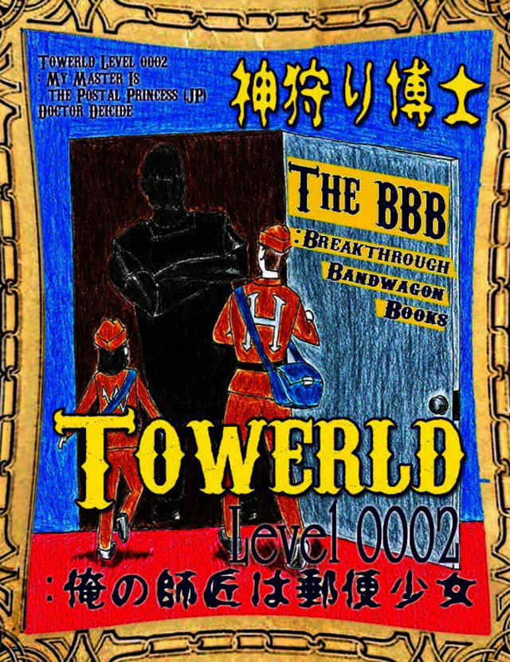

| Towerld Level 0002: 俺の師匠は郵便少女 (The BBB: Breakthrough Bandwagon Books) | |
| 神狩り博士 | |
| The BBB: Breakthrough Bandwagon Books (2015) | |

（邦題『 Towerld Level 0002: 俺の師匠は郵便少女』）
Written in both English and Japanese by Doctor Deicide
Cover illustration by Polka D
Cover design by Tanya
C opyright © 2013 Doctor Deicide / The BBB : Breakthrough Bandwagon Books
All rights reserved.
ISBN978-1-312-10584-3
---01---
これも、困難と言えるのか？
浸水階層から脱出するために、精肉工場で肉として処理される危険を冒（おか）して、やっとこの殺風景になり勝ちな工業階層とやらに辿（たど）り着いたのだが。
この工業階層の全体的な景観は、とにかく観る者の心に安らぎを与えない。無骨とか粗野とまでは言わないが、天井を見上げれば鉄骨らしき物が剥（む）き出しになっている部分もある。色気って奴を全く感じさせない。「生産性に色気なんか要らん」と言い返されそうだ。この階層では、「生産性が全て」なのであろう。廊下の両側にはドアが並んでいる。時々開いている扉から部屋の中を覗（のぞ）かせて頂いているが、製作所やら工務店のようだ。偶（たま）に作業員と思（おぼ）しき人を見掛けるが、誰もが忙しそうで俺に声を掛ける余裕も無さそうだ。ここの住人は、そんなに働き者なのか？それとも如何（いか）にも怪しい人物とは関わりたくは無いだけなのか？殆（ほとん）どのドアが閉じられていて、廊下を歩く人間を滅多に見掛けない。
そこで、『人類最良の友達』の出番の模様だ。（俺に取っては最悪だが。）
現在、俺は猛犬に取り囲まれている。（この世界は、 Towerld と言う名の建造物の内部なので、『野犬』とは呼べないか。実は飼育されているかも知れない。） 「一難去ってまた一難」だ。
生存本能に従い、それまで住んでいた浸水階層から脱出したのは良いのだが、この階層の絨毯（じゅうたん）の色彩は赤くない。音楽が聞こえたような気がするが、俺の到来を 歓迎する式典なんか存在しない。（幻聴だろうか？）この階層に就 （つ） いて 何も知らないから、自分でも時間の感覚を忘れる程に長時間彷徨（さまよ）っているところだ。 4 本の廊下が交わるこの交差点（丁字路でも十字路でも無く、『米字路』とでも言うのか？このように迷っているから『迷字路』と言うか、『迷路』だ。）に差し掛かり、中心点にて突っ立ってどの通路を選ぶか迷っている 時 に、猛犬の群れが 8 つの出口を全て塞（ふさ）いだ。
この辺りは照明が暗めだ。この工業階層でも治安が悪い階区なのかも知れない。（廊下の絨毯が綺麗だからと言って、治安が維持されて安全が確保されているとは限らない。）多くの道と通じる分、各階区から乱暴な輩がここに集まり易いのだろう。
余り歓迎されている雰囲気では無い。赤い絨毯で迎えられたければ、自分の血液で絨毯を染めるしか無いのか？
---02---
こいつ等は、雑種か？容姿は全体的に不揃（ふぞろ）いで、 余り 血統書付きには映らない。様々な種類の犬を交配した挙げ句の失敗作の寄せ集めの如（ごと）く、だ。この『失敗作』や『寄せ集め』から連想されるいい加減さが、 Towerld らしいよな。
何にせよ、この猛犬の集団との闘いは避けられない模様。闘うしか、無い。
相手から武器を奪うのは俺の得意技。暴漢の集団を相手に闘う事を苦にしない。だが、猛犬から牙を抜き取って奪うなんて離れ技を、俺は持ち合わせていない。勝ち目は無くても、素手で闘うしか無さそうだな。
---03---
「さあ、 何処（どこ） からでも掛かって、うわあああっ！」
猛犬は俺の言葉なんかに興味を示さず。「背筋が寒くなるような英雄の宣言を聞き終わってから攻撃を開始してくれる礼儀正しい悪役」なんて、現実には存在しない。
俺が攻撃の体勢と態勢に入る前に、俺の手足は複数の顎に挟まれた。鋭い牙が俺の肉に喰い込む。漁業で鍛えた肉体も、牙の前では精肉工場の挽（ひ）き肉器から絞り出されるピンク色のスライム肉と同じ。
猛犬は、数と力に任せて、俺を絨毯の床に押し倒し、『大の字』の状態で俺を寝かした。雑種の癖に、連携が取れているのか？（一匹、俺の耳許で吐息を吹き掛けているが、それだと『犬の字』だな。）
「俺から離れろ、この駄犬 共 があっ！」
俺は抵抗したのだが、何しろ相手が多過ぎる。武器らしい武器を持っていないから、相手から武器を奪って形勢逆転に持って行く事も出来ない。焦燥に支配された俺の思考は、支離滅裂な行動に繋（つな）がるばかり。犬が人間の言語を理解できないのを、俺は忘れていた。
交差点の真ん中で、俺は猛犬に襲われて挽き肉にされるのか？果てし無く遠く感じられて存在するかどうかも解らない世界の頂上への旅が始まったばかりの時点で、このままどうでも良い雑種の犬共のエサで俺は終わってしまうのか？俺が血統書に値しないだけでは無く、俺は雑種共のエサにしかなれないのか？（由緒（ゆいしょ）正しき血統の犬に食われる事が本望だとも思わないが。）それでは、俺は歴史の片隅にも残らないゴミだ。
俺は、俺はまだ、死にたくない。こんな無様な死に様だけは、御免だ。俺は、犬のメシなんかじゃねえっ！
---04---
激痛で朦朧（もうろう）とする意識の彼方から、警笛の鋭い音が聞こえて 来た 。何故（なにゆえ）、笛？死期を迎え、俺の可聴音域が変化しているのか？
猛犬達の噛む力が弱まっている。警笛の音に反応しているのか？俺に対する殺意や殺気が薄れて来ているような気がする。まだまだ牙が肉に深く食い込んでいるので、犬共を振り払う訳には行かない。
そこで、突然声が聞こえた。
「ちょっと失礼しまーす」
女の声か？決して甲高くは無いが、場違いな程に落ち着いている。『失礼』って、誰が何に対して失礼するのか？この修羅場の状況では予想外だったので、俺の頭脳は新たな展開に追い付いていない。で、何者だよ？
それまで俺を食する気で満々だった猛犬共が、急に傷付いた仔犬みたいに情け無い声で哭（な）き始めやがった。もう、俺を挽き肉に変える意思を持たないのならば、俺に噛み付いていた顎もその力を弱めるのみ。
仰向（あおむ）けの状態で床に磔（はりつけ）にされていたが、そこから上体と片膝だけを起こしてから邪魔者を振り払い、乱入者の姿を拝（おが）もうとした。
---05---
俺を窮地から救ってくれた者ならば、頼もしい雰囲気の漢（おとこ）を想像するだろう。先程の女の声から、それは有り得ないとは最初から悟っていた積もりだ。だが、それにしても、俺の眼前に居た者は、俺の想像力を試す程に予想外。
郵便配達人が使う茶色が基調の制服を着る少女が、そこにいた。制服はポケットだらけで、腰にはスプレイ缶を複数収納したベルトが巻かれていた。裾も袖も長いところからすると、 余り 肌を露出したくは無い模様。肩から郵便物の詰まった郵便袋を提げ、制帽を被っていた。制帽から溢れるように流れるのは、 余り 逞（たくま）しくは見えない両肩に接触しそうなボブカットの黒髪。警笛らしき物を、品の良い形をした唇に銜（くわ）えている。顔の面積が小さいからか、両眼が大きく輝いて見える。制服を除いては、郵便屋らしからぬ風貌の持ち主とも言える。
まだまだ窮地から完全に脱出していた訳では無いが、俺は彼女の素早い動きに魅（み）せられた。この身の熟（こな）し、木から木へと飛び移る小動物の如（ごと）く軽（かろ）やかだ。猛犬にも対抗できるぞ。
その笛に息を吹き込んでいるらしいのだが、俺はその音を聞けない。猛犬達は更（さら）にその勢いを失い、穏やかになった。（もう、猛犬とは表現できない。）どうやらそれは人間には聞こえない超音波を発する犬笛の一種らしい。最初に聞こえた警笛とは別物か？警笛にも犬を制御する機能が組み込まれているのかも知れない。（ここに到着する前に、警笛から犬笛に換えた様子だ。）
修羅場は過ぎ去った模様。犬達はそれこそ尻尾を巻いてこの米字路から各々（おのおの）の方向に散って行った。 余り にも速い展開に、俺の頭脳が追い付いていない。傍（はた）から見れば、俺は間抜（まぬ）けに映っているかも知れない。
---06---
郵便少女は難無（なんな）く猛犬達を撃退した。周囲を見渡し、安全を確認すると同時に、俺と向き合い、両手を自分の膝に置いてから腰を落とし、まだ立ち上がっていない俺の表情を窺（うかが）った。その丸い両眼を瞬（まばた）かせると、小リスみたいだ。（それから、その顔を 余り 俺に近付けるな。窒息しそうだ。危険人物かも知れない俺に対する警戒を解いても良いのか？ある意味、俺は猛犬よりも危険だと思うのだが。）
「遠くからも犬が吠（ほ）えているのが聞こえたので、唯事（ただごと）では無いと思い、ここに直行したのですが。この状況では、尋（たず）ねる 事 は決まっていますよね？有り触れて申し訳無いけど、大丈夫ですか？」
冗談がきついな、この小リスは。俺は猛犬に引き裂かれていたんだぞ。それで大丈夫な訳が無いだろう。
「正直なところ、大丈夫とは無い難（がた）い」
一体、彼女はどのような反応を期待していたのであろうか？何にせよ、ここで俺が言うべき 事 は、唯（ただ）一つ。（忘れる前に言って 置か ねば。）
「生きているのは確かだ。それには感謝している、います。どうも、 有り難 （がと） う 、御座（ござ）います」
本当は立ち上がってから御礼を言うべきなのだが、立ち上がる間に礼を述べる事を忘れそうな気がしたので、座ったまま感謝の言葉を伝えた。
「如何致（どういた）しまして」
俺の言葉が嬉しかったのか、笑みを浮かべている。それは、俺の激痛をも消し去りそうな魔力を秘めている。この類（たぐ）いの魔法は、この世界にも存在する様子だ。この至近距離でその表情は、俺の呼吸器官の機能を狂わせる。嬉しいような、苦しいような。（両方だな、これは。）
俺が自力で立ち上がろうとした 時 、その笑みの魅力から醒（さ）めてしまった。
「うぬうっ！」
先程までに肉に食い込んでいた牙は、骨にも傷を入れたのか？俺の血液で染まった絨毯の上に座り込んでしまった。郵便少女は俺に肩を貸そうとしたが、丁寧に断わった。（余り力自慢では無さそうだし、な。）
「救護団に連絡しましょうか？」
「断わる！それは、困る。これは擦（かす）り傷程度だ」
救護団とやらに連絡されると、俺の正体が割れてしまい、あの浸水階層に連れ戻される。それは、御免だ。
彼女は自分の下顎を軽く摘（つま）むような仕草を取り、首を傾（かし）げて考え込んだ。そのような些細（ささい）な仕草も、絵になる。
「お家（うち）は、何処（どこ）ですか？」
「俺は、この下の階層からやって来た」
小動物を彷彿（ほうふつ）させる目が、俺を正直にさせる。嘘を吐（つ）いても無駄だと悟った。
もう一度、首を傾げて考えている。
「 キミ は、何かに巻き込まれているのかな？詳しい事はあとで聞くけど、 キミ のその怪我（けが）を治すのが先決だね。取り敢えず、あたしの自室に立ち寄らない？」
どう考えても俺の方が年配なのだが、この小動物は俺の 事 を『 キミ 』と呼ぶのか？ま、いいけどさ。生命（いのち）の恩人（恩リス？）だし、な。
「それは、有り難（がた）い。その招待を受け入れよう、させて 頂 きます」
彼女は余り不快で不愉快な人物では無さそうだ。控え目に言えば、猛犬の集団よりかは遥かに増しだよな。
---07---
俺が気合いを入れて立ち上がろうとすれば、郵便少女は小さな手を貸してくれた。俺の手を引っ張る形で、この忌まわしき米字路を一緒にあとにした。（俺の手に付着した血液を、気にしないのか？）
立ち上がって気付いたのだが、彼女の背丈は、控え目に言えば小動物を彷彿（ほうふつ）させる。俺も決して小さくは無いから、俺と比較するとそのように見えるのか？その小さな頭が、俺の胸元に届くかどうか、だ。傍から見れば、俺達は親子に見えるのか？（その発想には、寒気を覚える。「年齢の離れた兄妹」に軌道修正して置こう。）そこで疑問に思ったのだが、この少女の年齢は幾（いく）つであろうか？（本人に尋ねる訳にも行かない。）彼女も見掛けよりかは実際には年輩なのかも知れない。郵便屋なのだから、未成年では無さそうだし。（この階層では年少者労働が推奨されていない事を祈る。）
彼女の自室に向かう途中、郵便少女は自己紹介をした。
「あたしの名前は、ウェンディエトゥラ・ネヴァリテュアープ（ Wendietrea Nevaryt-Terp ）。以後、ウェンディ（ Wendy ）と呼んで下さいね」
「俺の ID コードは、 Hector_1304 。ヘクトァと呼ぶのが無難だな」
「この下の階層に関する階層伝説ならば何度か聞いた 事 あるけど。苗字が存在しないと言う噂は、本当だったんだね。面白そうだから、あとで色々とお話を聞かせて下さいな」
「ああ」
全身を駆け抜ける激痛の余り、俺は返事をするので精一杯。あと何（ど）れ位、歩くのだ？
「怪我しているからか、 キミ は 余り 口数が多くないね。あとで 手当て をするから、もう少しの辛抱だよ」
「ああ」
返事をするのも、面倒臭い。
---01---
ウェンディの自宅は、廊下に面していた。そこに到着すると同時に俺に応急処置用の救急箱を手渡し、軽く手当てをしたあとに、まだ残されたその日の仕事を片付けに再び外出した。（本物の太陽が存在しない Towerld では、 TTT （ Towerld Totalitarian Transmission ）が標準時計を使って一日の時間のサイクルを制御している。）じっとしていられない性分そして商売なのだな。
結局、俺のみがウェンディの自室に残される格好になった。（ちょっと不用心じゃ無いのか？）大部屋とは言い難（がた）いが、 1 人や 2 人が暮らすには丁度良い大きさだ。生活に必要な物も一通り揃（そろ）っている。内装は質素だが、所謂（いわゆる）女性の所帯と言う雰囲気だ。（別に俺は『女性の所帯』に詳しい訳では無いが。）整理整頓はきちんと出来る様子だな。感心感心。特別派手な内装では無くても印象に残るのは、この工業階層に来て以来無骨な造りの廊下やら製作所ばかりを見て来たからであろうか？
生活感に溢れている空間とも言えるのだが、それでも俺の緊張は抜けない。幾らウェンディと名乗る者が余所者（よそもの）の俺に親切にしてくれているとは言え、ここで図々しくする訳には行かない。
とにかく、ここでは応急処置を続け、早く回復しよう。俺を窮地から救ってくれたウェンディに、何らかの形で御礼をしたい。
---02---
ウェンディが配達の仕事から戻って来た。
「唯今（ただいま）、戻りました」
それは、見れば解ると思うが。当たり前の 事 を口にするんだな。
「お帰り」
それは、俺の言う科白（せりふ）か？
俺は遠慮勝ちにソーファに座っていたが、隣に彼女が腰掛けた。
「まだきちんと手当てをしていない様子だね。手伝おうか？」
一日中仕事をしていた筈だが、この働き者は全く疲労を感じさせない。
---03---
俺への追加治療を続ける間、ウェンディは俺に質問を投げ掛けた。（きっと俺が住んでいた浸水階層の 事 に興味を抱いているのであろう。）
「 キミ はこの階層で何をしているのかな？あたしは仕事柄ここより上の階層には時々赴（おもむ）くけど、ここより下の階層には行った 事 が無い。だから、 キミ の住んでいた階層に就 （つ） いて色々と教えてくれると嬉しいな」
俺は、これまでの生（お）い立ちやら浸水階層に関して俺の知っている 事 を説明した。
「そうすると、その浸水階層から逃（のが）れるために、ここに移住しようとしているのかな？」
「残念ながら、そうでは無い。俺は、洪水から脱出するだけでは無く、可能な限り上の階層へと Towerld を登り続けたい。何処（どこ） まで続くのかは解らないが」
「それは、興味深いね。実は、あたしもこの世界をもっと知りたい。だからあたしは自分の人生の目的や目標への踏み台として、郵便屋の職を選んだのだけどね」
踏み台か？様々な意味で、俺にも必要かもな。
「郵便屋に成ると、何か良い事でもあるのか？」
「郵便屋としての実績を積めば、ここよりも高い階層への配達も許されるようになるけど。そうすれば、多くの階層を知る 事 になるかな。郵便屋と言うのは、無職にならずに見聞を広められる数少ない職業だし。身銭を稼ぎながら冒険家の気分も味わえるよ」
郵便配達人か。確かにそれを目指せば、食品工場で危ない目に遭（あ）わなくても上の階層に行けそうだよな。漁師よりも、行動半径が大きい。悪くは、無い、よな。
そこで、ウェンディは提案した。
「で、どうかな？ キミ は、あたしの......」
俺は、ウェンディの、何だと？俺の耳許（みみもと）で、何を伝えたいのだ？吐息が俺の血塗（ちまみ）れの耳朶（みみたぶ）をくすぐる。
「あたしの......、助手になってくれるかな？」
俺は自分の口から溜め息が漏れるのを感じた。これは安堵（あんど）の溜め息か？それとも落胆の溜め息か？（そもそも、俺は何かに期待していたのか？）
---04---
「あたしの助手になれば、有職者として再登録できるよ。職があれば、新しい ID カードを発行できるし。精肉工場とやらで、カードを奪われたのだよね？だったら、序（つい）でにここで新しいのを作成したら良いと思う」
職を手に入れてから、カードを作成か。本来ならば、順序が逆だと思うが。まあいいか。（いいのか？）
「あと、先程から説明している通り、郵便配達人には、上の階に行って仕事をする特典が与えられるよ。少しでも上の階層に登り続けたい キミ には、便利なんじゃ無いかな？」
うむむ、確かに便利だ。それは、認めよう。だが、本当にそれで良いのか？
「問題なのは、俺が郵便屋になると、ここを拠点にせざるを得なくなる事だ。そうなれば、ここに頻繁に戻って来る 事 になる。行動半径が限定されると思うが、どうであろうか？」
「成る程ね。でも、これ以上に優れた方法って、あるかな？」
「それが解れば、苦労しないよな」
「焦る必要は無いと思う。今はその怪我からの回復を図（はか）る 事 が先決だよね」
それに対して、俺は何も言えず。一理は、ある な。
「回復するまでは、ゆっくりと考えてみては、どうかな？ キミ は時間を掛けて計画を立てた方が上手く物事を展開できそうだし」
知ったような口を聞くじゃ無いか、この小リスは。間違ってはいないのは認めるが。
ウェンディの提案は、悪くは無いと先程から思う。仕事を手に入れれば、日々の生活や資金面での心配は解消される。軍資金も長旅には必要だ。仕事をしながら旅立ちに必要な道具を揃（そろ）える 事 も可能となる。それに、配達の仕事をしながら、上の階層を偵察する 事 が出来る。俺が怪我から回復する間、上の階層へ登り続ける俺の計画を仕切り直す 事 も、現実的な話だ。
「ところで、俺は思うのだが」
忘れる前に、確認して置きたい 事 がある。
「何かな？」
「どうして、君は俺にここまで親切にしてくれるのであろうか？これはこれで非常に有り難（がた）いし、こう見えても感謝しているのだ。理由を教えてくれると、感謝を表現し 易 くなる」
「へえ、感謝してくれるの？有り難（がと）う」
「そちらが先に礼を述べては、困る」
「 キミ のその眼を観た時に、直感したんだ。 キミ が大志を抱いているってね。世界が崩壊しても為（な）しては成し続けて上昇を続けそうな意志の強さを感じるよ。しかも、それがあたしの目標である「ここから離れた場所を発見し、気に入った階層に移住して暮らして、これまでとは全く異なる種類の人々と出会って知り合いたい」ってのと似ているし。あたし達、多くの階層を訪れて移動したい点では共通しているよね？こうなれば、手伝いたいって普通は感じるでしょう？」
普通はそこまで感じないと俺は思うのだが。どうも感じ易い性格の様子だ。何があったのかは知らないが、余りこの階層には長居したくは無いのか？
「他の部分はどうでも良くなる位に、その眼に惚（ほ）れたのかも知れない」
何だよ、その言い方は？素直に喜べないような気もするが。まあいいや。
「成る程。解った。その提案を、受け入れよう」
「どうも、有り難（がと）う」
その目の輝きから察するところ、その言葉に偽（いつわ）りは無い。
「で、俺は助手として何をすれば良いのだ？」
「助手になってくれるんだ。嬉しいなあ」
「君が提案したのだろう」
ふざけているのか、それとも本当に覚えていないのか？
「そう、それは聡明なあたしの提案なのです。忘れていたけど」
聡明ならば、忘れるなよ。その思考、読めないな。
「あのね、あたしは自他共に認める業界最高速の郵便配達人なのだけど、重い荷物を運ぶのが、苦手なんだ」
そりゃあ、その矮躯（わいく）では、そうだろうよ。
「だ、か、ら、あたしの荷物を運んでこのあたしを追い駆けるだけ。簡単でしょ？」
何故、口許（くちもと）に悪戯（いたずら）っぽい曲線を追加する？何か、企（たくら）んでいるのか？まあ、この小リスにならば、騙（だま）されても喜んで許してしまいそうだな。（結局、小動物に甘い俺はこうやって騙されているのか？）
---05---
ウェンディは俺の手を取り、握手した。（それにしても小さい手だな。俺の手で砕いてしまうかと思ったぞ。猫かよ？猫では無くて、リスだよな。）
「これで締結だね。制服ならば帰り際に持って来たから。もう今日はシャワーでも浴びて休んで下さいな。まだ始まったばかりだけど、ここでのこれからの生活は長くなるのだし」
彼女の考えを、俺は読めない。ここで寝泊まりしろって事かよ？
「あたしは キミ の師匠として、生活基盤を提供する義務を抱いています。猛犬達のエサになりたくなければ、廊下で暮らす訳には行かないでしょう？それに、あたしも自室に番犬が居ると心強いし。キミならば、何が侵入して来ても対処できそうだよね？」
「俺は、弟子兼番犬かい？マグロの相方（あいかた）から、出世したもんだ」
「御蔭様で、あたしも師匠に出世したよ、出世魚君。キミの仕事ブリには期待しているよ」
おぼこ娘にしか見えないのに、何を言うか。勝手にしろ。
「仕事の依頼が目白押しだと大人しくなると思うが、この番犬は飼い主の手を噛むかも知れないぞ」
「あたしの手を噛みたくなれば、子守唄の代わりに犬笛を聞かせてあげるから」
子守唄って。俺を誰だと思っているのだ？
「犬笛の超音波は人間の耳には聞こえないから、耳障りにはならないと思うよ。だから、静寂の一時（ひととき）をあたしと一緒に過ごしたくなれば、犬笛を吹いて差し上げるね」
忙しい小リスだ。ここは弟子の俺がしっかりしないとな。
---01---
浸水階層から脱出して数日が経過した。ウェンディが仕事を提供し俺を泊めてくれる御蔭で、暫（しばら）くの間は医衣食住の心配から解放される。俺の事を信用しているからか何かは知らないが、俺を女の自室に滞在させても良いのか？俺も緊張の余りに心も身体も中々休まらない。とは言え、廊下で猛犬に襲われるよりかは、増しだ。（「小リスと同居している」と自分に言い聞かせるので、必死だ。）
彼女の応急処置の御蔭で怪我からも回復したし、俺も郵便屋（そして小リスの弟子）としてデビューだ。たった今、ウェンディが調達してくれた制服に身を固め、走るのに適したスニーカーを履いたところだ。それにしても、この靴は、軽い。神話とやらに登場する翼付きのサンダルでも履いた気分にさせてくれる。俺が長年履いていた防水長靴とは大違いだ。今ここで本物の大空を目（ま）の当たりにすれば、本当に宙を舞いそうだ。
俺とウェンディは姿見（すがたみ）の前で制服姿をチェックしている。俺は渡された制帽を目深（まぶか）に被り、郵便鞄（かばん）を肩に掛け、見た目に問題が無い 事 を確認したところだ。俺の制服姿も、悪くないな。浸水階層で漁業を営んでいた時には余り服装を気にしなかったが。これが噂に聞いていた「制服の魔法」とか言う奴か。実はこの Towerld にも、魔法が存在したのだな。この俺様に惚（ほ）れるなよ、そこの小リス師匠。（そう言えば、彼女が初対面で披露した笑顔にも魔力が宿っていたな。）
初出勤への準備を進めると同時に、気合いが入る。この勢いに乗せて、このまま Towerld を登り続けたい。（落ち着けよ、 Hector_1304 。先は長いのだぜ。）
ウェンディは俺の背中を軽く叩いた。
「それでは、出発しましょう。このあたしに、追い付けるかな？」
「魚と格闘して鍛えたこの俺ならば、大丈夫だ」
「闘って来た相手は、巨大な鯔（ぼら）だったりして」
『大ボラ』とでも言いたいのか。言ってくれるじゃ無い か。
---02---
余り、大口を叩く物では、無いな。
ウェンディは、速い。とにかく、速い！彼女は別に一生懸命に走っている素振（そぶ）りを見せていない。表情も、普段俺と会話する時のそれと同じだ。それなのに、その動きは疾風の如（ごと）し。
俺だって決して体力に自信が無い訳では無い。浸水階層で普段から仕事で鍛えていたから、虚弱体質では無い。一応、肉体派に分類されるぞ。（走りよりも泳ぎの方が得意だったのは事実だが。）それなのに、今の俺はウェンディの姿を見失いそうだ。これでは、追い付くかどうか以前の問題とも言える。
白状すれば、俺が走るのは、何年か振りだ。だが、それは言い訳として成立しない。
制服で隠れてよく解らないが、ウェンディは長時間高速で走るための肉体の持ち主だ。制服以外の服を着用する時もあるし、一応同居しているから、それ位の事は解る。
ウェンディは何度も俺を待つために停止した。それでも俺は彼女に辛うじて追い付くので精一杯。俺の全力疾走は、彼女の巡航速度にも及（およ）ばない。仕事開始早々、俺は彼女の足を引っ張っている。済まないな。これでは、唯（ただ）の駄犬だ。
遅れを取る俺を気にする素振りをも示さずに、ウェンディは廊下に面するドアを手で指し示した。
「こちらが、郵便局ね」
息が切れていたから、俺は返事できない。苦しい。
ウェンディの呼吸は全く乱れておらず。汗を 1 滴も掻いていない。余裕で言葉を発せられる。あの速度で走り続けても、大丈夫なのか？この少女、人間か？やはり、野生の小動物なのだろうか？見掛けだけで判断してはならないな。
俺は、とんでもない者 の助手になってしまった模様。
---03---
郵便局は、絨毯の敷かれた倉庫みたいだ。正面を見れば、長いカウンターが左右に伸び、カウンターの向こう側には数え切れない程に沢山の机が並んでいた。
郵便局の中は、配達屋やら局員でごった返していた。忙しいからか、彼等はこの新入りの存在に気付いていない。全員、俺達と同じ制服を着用し、仏頂面であらゆる方向に早足で歩き回っている。何が楽しくて生きているのやら。全速力で走っても表情を歪めないウェンディを見習えよ。
予想通りだが、郵便局の雰囲気は決して華やかとは言い難（がた）い。郵送予定の手紙やら小包の出入りが激しい。一歩誤ればゴミ捨て場に成り下がりそうだが、辛うじて整理整頓が成されている状態だ。機能的には清潔であるとも言えるのか？
これも、我らが TTT の縮図か？完全無欠には、程遠い。 Towerld は、これ程に多くの郵便配達人を必要とするのか？流石の TTT 様も、物体をデータ化して、そのデータを Towerld の隅々まで送信して、そのデータから物体を形成するなんて言う魔法のような 事 をする訳では無い。（この世界の魔法は、制服と笑顔だけで充分か？）
---04---
俺とウェンディはカウンターの裏側に回り、 TTT の端末にアクセスした。俺のアカウントの状態を確認するために、俺の ID コード（ Hector_1304 ）を入力し、生体認証装置で俺の全身を調べさせた。（俺は ID カードを持っていない。）
「これは、これは」
興味深そうに言葉を発するのは、ウェンディ。
俺の個人情報が画面に表示されている。何か変な情報が混じっているのか？
「ふうん、 キミ は、魚肉の腸詰めなんだって？」
これは、意表を突かれた。それでも、生体認証装置は先程エラーを出さなかった。（ TTT は、本当にいい加減だ。）
「冴（さ）えないねえ。折角の眼の輝きも、台無しだよ」
うう、何も言い返せない。
「でも、起こった事は、仕方が無いから、これからも前に、そして上に進もうね」
足だけでは無く、頭の切り換えも速い（早い？）のか。
「これまでの個人情報は消去されていないから、これからも使えるんだってさ。良かったねえ。キミはあたしの一番弟子だから、手続きの大半は既に終了しているよ。尤（もっと）も、唯一の弟子だから一番は当然だけどね。 キミ の個人情報の職業欄に『郵便配達人』と記入してから、ここで キミ に郵便配達人の名札（ tag ）を手渡すね。そんなに時間は掛からないから」
ウェンディは別の装置に表示された手続き画面に何かを入力している。
それにしても、物事（こと）は意外と簡単に進行している。少女が見ず知らずの俺にあっさりと職を与え、その職業を身分証明として扱い、俺に名札と市民権を与えようとしている。いい加減だ。
俺は念のために確認してみた。
「その端末は、 TTT に繋がっているのだよな？」
「うん、そうだけど。他に何も考えられないよね。それが、どうかしたのかな？」
「訊（き）いてみただけだ」
これぞ、『 TTT らしさ』とでも言おうか。余りにも巨大な情報網（ network ）だからか、ここにいる不法侵入者（ Hector_1304 ）の存在の ように 些細（ささい）な 事 等、どうでも良いのだな。俺が自分の身体の細胞一つひとつを気にも留めないのと同様に。
手続きやデータ入力を終えたウェンディは、俺に細い鎖で繋がった金属製の名札を手渡した。ネックレスの ような 代物か。それを自分の首に掛けて、名札が自分の制服の胸ポケット左右 2 つの中間点に当たるように位置を調節した。
「一々 ID コードとパスワードを入力しなくても、その名札さえ提示すれば、郵便配達人として大抵の場所に行けるから」
「これで正式に郵便配達人に成れたのだな。で、何か入会の儀式とかをしなくてはならんのか？」
ウェンディはまた俺に顔を近付けている。（何をする積もりだ？）
「あたしの踊る......」
「踊る、何だ？」
（言葉も行動も予測不可能だな。）
「踊る黒髪を追い掛けるだけ。 キミ にそれが出来るかな？」
得意気な表情で俺を見据えるか。挑発しているのか？
「厳しいような気がするな」
「 キミ には、息切れをして倒れる権利を差し上げるから。あたしの機嫌が良ければ、待つかも知れない。あたしの気分次第かな？」
俺の師匠ってのは、人を食ったような、小リスだ。（肉食動物ならば、イタチか？）
---01---
あの日以来、俺は郵便配達人兼助手として、一生懸命に働き続けた。遣（や）る事は、比較的簡単に見えた。ウェンディの黒髪を追い掛け、重い荷物があれば 彼女の分も運んだ。（やはり彼女はパワーよりもスピードに定評がある 様子だ。）そして、部屋から部屋へと廊下を走り回り、手紙や小包を受け取ったり配達したり。それの連続だ。
何よりもこの俺を驚かせるのが、ウェンディの行動範囲の広さ。それだけのスピードを出して、しかも呼吸が全く乱れない。俺が漁師として生計を立てていた時に住んでいた浸水階層とこの工業階層は、基本的なサイズや形状の面では同じだ。階層は直径 30km で、直径 10km の同心円の軸以外の部分（階区）にて、人々が暮らしている。その巨大な敷地を彼女は余裕で網羅している。この階層は、ウェンディにしてみれば自分の縄張りなのだな。
遅れてばかりのこの俺のために、何度も何度も減速したり立ち止まったりしてくれるのが救いだ。人を茶化したような口を叩く少女も、結構俺を気遣（きづか）ってくれる。悪巫山戯（わるふざけ）が好きそうでも、実は人生を舐めていない様子だ。意外と奥が深いな。
---02---
郵便配達人としての業務に一生懸命に携（たずさ）わり、仕事を覚える間にも、俺はこの工業階層を観察し続けた。
とにかく、この下にある浸水階層との違いを感じる一方だ。（この階層と下の階層が同じ建造物（ Towerld ）の内部にあるとは信じられない。）ここは水に浸（ひた）っていないし、絨毯が敷かれているし、時々犬を見掛ける。ウェンディの犬笛の御蔭で、犬からの襲撃を恐れる必要も無いが。
あちらこちらで、如何（いか）にも物造りが得意そうな雰囲気を醸し出している。（連なるドアの向こう側にある製作所を覗（のぞ）かなくても、それは解る。）浸水階層ではお目に掛かる事が無かったのだが、こちらの天井や壁には鉱物油らしき物に因（よ）る汚れが目立つ。偶（たま）に廊下の片隅に木箱やら段ボール箱が積み上げられているのも見掛ける。余り景観とかを気にしないのだろうか？ならば、何故絨毯を敷く？絨毯で辛うじて人間が住めるように出来ているのか？
工業階層を最も顕著に特徴付けているのは、別の物にある。
別にこの階層に交通手段が存在しない訳では無い。郵便配達人だって、文明の利器に頼るのだ。
浸水階層とは異なり、この階層には移動式歩道と言う自動化された交通手段が存在する。階区のあらゆる場所に張り巡らされた工場のベルトコンヴェイヤーのようなものだ。例えばこの階層の反対側のように、遠い場所に配達する場合には、この移動式歩道のお世話になる。
病的な程に走るのが好きなウェンディは移動式歩道の上でも全速力で走りたがるが、時には俺の 事 を気遣（きづか）って減速したり立ち止まったりしてくれる。俺に蓄積される疲労が気掛かりな様子だ。（それにしても、彼女と一緒に働くのは、本当に体力を消耗させる。）
---03---
日々の業務に一生懸命なのは良いのだが、俺は一度も上の階層に行った 事 が無い。俺が郵便屋に成った理由の一つは、上の階層へのアクセスを手に入れる 事 だ。俺はその日が来るのを待ち続け、下積みの生活を続けている。
何が恐いかと言えば、俺が実を言えばこの配達の業務に慣れて来ている事実（こと）だ。ウェンディの速度には到底勝てないとは言え、俺は走る 事 に慣れて来た。俺が長年漁師として歩行運動よりも水泳運動に慣れ親しんで来た 事 を考えれば、これは驚くに値する。ウェンディも賛辞を惜しまない位だ。
郵便配達人も、悪くないな。確かに走り続けるのは大変だが、辛いとは感じない。俺の環境適応能力は、可也（かなり）高いと見た。
ここでの生活が以前に比べて快適に感じられるが余りに、 Towerld を登り続ける事への俺の野心が弱まって来ている。どうした、俺の冒険心？ウェンディも色々な意味で一緒に生活をするに相応（ふさわ）しいから、俺の使命が霞（かす）み、俺の決心が鈍り、俺の宿命が翳（かげ）りを見せている。
俺は郵便屋として一生を終えたくは無い、筈だが。
---04---
一度は諦め掛けたが、辛抱ってのは、続ける物だな。日々の真面目な勤務態度が評価されたからか、遂に俺も上の階層に赴（おもむ）ける ように なった。ウェンディも俺が上の階に行きたがっているのを知っていたからか、俺は上の階に配達する荷物を担当する 事 になった。粋（いき）な計（はか）らいだねえ、小リス先生。あとでその小さな頭を撫（な）でてやろう。（手を噛まれないように気を付けねば。）
---01---
上の階層に行けるようになったのは良いのだが、それだけでは物足りない。その件に就 （つ） いて、俺はウェンディに訊（き）いてみた。
「なんか、こう、上物（じょうもの）の荷物って無いのか？上物を配達する階域ってのは、普段は一般人が入れない場所ばかりだろうし、上の階層を知り尽くすにはこれ以上の機会は無いよな」
まるで俺のその言葉を待っていたかの如（ごと）く、ウェンディは即座に答えた。
「上物なら、あるよ。これを配達すれば、可也（かなり）興味深い場所にも行けるし、報酬も大きいよ。ちょっとばかり胡乱（うろん）な輩（やから）を相手にした挙げ句に、生きて帰って来られたらの話だけどね」
少々物騒だが、得られる物も大きそうだ。
「俺にもその上物を扱えないかな？」
「いいんじゃ無いかな。でもねえ、誰も関わりたくない厄介物なんだけど、大丈夫？」
最近勢いを失っていた俺の上層階への野心が再燃して来た。
「もう誰も俺を止められない」
小リスはその円（つぶ）らな瞳で俺の眼を観た。（ちょっと近寄り過ぎだ。）
「 キミ の鳶色（とびいろ）の両眼には、青信号が灯（とも）っているよ」
---02---
今日は、特別な一日に成りそうだ。先ずはこの 階層の一角にある鍛冶屋に荷物を届け、鍛冶屋から上の階層にあ る「 続きの間（ま） 」 （ suite ） に別の荷物を直接配達し、その「続きの間」 にてまた別の荷物を受け取ってそれを元の鍛冶屋に手渡す予定だ。
これで、やっと上の階層に足を踏み入れる 事 が出来る。上の階層にて何が俺を待ち受けているのか？そんな事は、実際にやれば解る。考える前に行動を起こせば良いのだ。
最初に鍛冶屋に向かう前に、ウェンディは色々と教えてくれた。
「 この鍛冶屋ってのが、実は可也（かなり）の曲者（くせもの）で、『続きの間』 のオーナーも負けずに偏屈なんだよね。オーナーの手下の大半は、性差別的な態度を遠慮無く示すし。彼等を相手に仕事をするのは、あたしのように多くの人々から好かれ易い性格の持ち主でも、正直難（むずか）しい。生きて帰って来られるだけでも昇級昇給ボーナス増額確定だし。それだけ郵便局が大盤振る舞いをしても、郵便局員が積極的にこの配達担当を名乗り出ない。それはどうして、か？ キミ には解るよね？」
「その分だけ、きつい仕事なんだろ」
「その通り」
彼女の説明は、続く。
「 キミ に何が起きても、これだけは忘れないでね。彼等は、一応お客様で、「お客様は王様」だから。我々の遠い先祖が築き上げたとされる古代文明では、「お客様は神様」だったらしい。この Towerld では所謂（いわゆる）『神様』と呼ばれる存在は確認されていないから、『王様』と入れ替えられたらしいけど。話が逸（そ）れたね」
つまり、 Towerld には王様が存在するのか？お姫様は？まあいいや。存在すれば、 その内 、遭（あ）えるだろう。
「あたしの同僚達も何人かこの上物配達を担当した 事 があるけど、結局みんな辞めてしまった。何故か生命（いのち）を落とした者もいるし」
物騒だな。
上物を扱うと言う事は、必ずしも上客を相手にするとは限らない。危険な芳香（かおり）で、顔面も精神も歪みそうだ。だが、ここで尻込む 訳には行かぬ。上の階層を知り尽くし、存在も確認されていない 最上階に向かって上の階層に登り続けるためであれば、俺はこの生命（いのち）を賭（と）しても構わぬ。
---03---
鍛冶職人の住み処（か）兼作業場は、この工業階層の産業の中心部と言える工業階区の外れに位置する。俺達の普段の活動階域から離れているので、今回は移動式歩道のお世話になった。（ウェンディはスピードを緩めなかったので、俺の疲労回復の目論見（もくろみ）は外れたが。）
この工業階区の外れでは、雰囲気も照明も薄暗い。ここの照明にエナジーを回す価値が無いと判断したか。（そもそも、照明に限った 事 では無いが、 Towerld のエナジーは何処（どこ）から来るのだ？）工場の機械音やら騒音が少しばかり離れた場所から聞こえて来る。生産活動に関わっているから、廃墟やスラム階区とは異なる。オイルや鉄の臭（にお）いが漂っている。 余り 長時間吸引したいとは思わない。ウェンディは気にしないのだろうか？
工業階層の工業階区だから、それ程に高い芸術点をその景観から期待できない。尤（もっと）も、俺が以前住んでいた浸水階層も、芸術的とは言い難（がた）いが。それでも、荒廃したスラム階区とは異なり、この工業階区の生産性は皆無とは言えないから、最悪でも無い。
---04---
俺の肺は酸素を求めている。移動式歩道からここまで数 km を走り続けた。もう、ウェンディと一緒にいる限り、走りから逃げる事は出来ない。（それこそ走りから走って逃げる事も不可能。）彼女は、 1 滴も発汗していない。新種の動物かよ？（余り深く突っ込まない方が良いかもな。）
薄暗い廊下の一角に、無骨な金属のドアが設けられている。鍛冶屋と言えば連想してしまう鉄槌（かなづち）の音は、響き渡っていない。（鍛冶屋はメシでも食っているのか？）
扉の貼り紙には、「入るも帰るも、自己責任」と書いてある。
自己責任、上等じゃ無いか。この危険の薫（かお）りがオイル臭をも圧倒する 時 、俺の好奇心が振り切れそうになる。（この冒険心があるからこそ、俺は Towerld を登り続ける旅を始めたのだぜ。）
ドアをノックしたのは、ウェンディ。（先を越されて、悔しい。）
反応は、無い。彼女は呼び鈴（りん）を押したが、無反応のまま。
ウェンディは数歩か後退した。何か言われるまでも無く、俺はそれまで背負っていた鍛冶屋向けの荷物を左腕に乗せ、疾走に因（よ）り乱れていた呼吸を強制的に整え、ドアノブを握った。（正直、愛（いと）しき小リスに危険を冒（おか）して欲しくは無い。ここのお客様は危険らしいし。）
ドアを外側にゆっくりと開（ひら）いた。聞こえるのは、俺のまだ乱れている呼吸音のみ。
鍛冶屋の中は、薄暗い廊下よりも暗い。この暗闇に目を慣らすために、俺は直ぐには動かず。（それに、呼吸を整える時間が欲しい。）
---05---
俺は得意の通る声で、ドアの外側から呼んだ。
「済みません。どなたかご在宅中でしょうかあ？」
返事が、無い。ここに置いて行く荷物もあるし、ここで受け取る予定の荷物もあるから、このまま立ち去る訳には行かない。俺は、足をドアの奥に踏み入れた。
「ちょっと待って！」
待てるかよ。俺は小リスの制止を無視した。 ここで引き下がっては、俺の成績は下がる一方。俺は偵察を兼ねて「続きの間」 に荷物を配達したいのだ。弟子の遣（や）る気を舐（な）めて貰っては困るぜ、小リス先生よお。
---06---
勇気を振り絞って暗い鍛冶屋に足を踏み入れたら、暗闇から突然現われた物体が俺に体当たりを喰らわせた。
「がああっ！」
俺の身体は突き飛ばされ、付近の壁に肩から激突した。本能的に覆（おお）い被（かぶ）さるように荷物に抱き着いたので、荷物は無事の模様。
ウェンディはこれに気付いていたのか？変な自尊心に支配されずに、俺は彼女の言葉に素直に従っていれば良かったのだ。今更（いまさら）、遅いけどな。
暗闇に浮かぶのは、一対の妖気漂わせながら輝く物体。それは、眼だ。それは、持ち主の狂気を如実（にょじつ）に映し出す、本能剥（む）き出しの眼。これは、人間を放棄した狂人の眼光だ。恐怖の余り、俺の身も心も瞬時に硬直してしまった。
俺の目がやっと暗闇に慣れ、その眼光の持ち主の姿を確認した。
そいつは、巨漢。肥満体では無く、日頃からの労働で鍛えられた肉体を誇る。上腕の太さが、俺の太腿の太さに匹敵する。決して物語に登場する英雄や神々のように派手では無いが、地道ながらも力強さを滲（にじ）ませている。俺だって決して虚弱体質では無いのだが、こいつの隣では小リスと間違えられる程に線が細く映るだろう。如何（いか）にも、巨大な鉄槌を金床（かなとこ）に打ち付けるための肉体、と言った風情（ふぜい）か。
その肉体に優るとも劣らずに印象的なのが、剃られた頭部と髭の無い顔面。鍛冶場では、洒落（しゃれ）た髪型も生い茂る顎髭（あごひげ）も邪魔なだけだろう。この禿頭（とくとう）が、こいつの醸（かも）し出す恐怖を更（さら）に引き立てている。暗がりの中で徐々に浮かび上がる顔面は、荒れ狂う悪鬼の表情そのもの。
半 袖シャツと長ズボンは普通だが、金属の表面処理の施された前掛け が持ち主の職業を証明している。鍛冶屋の象徴とも言えるハマーと手袋を持っていないが、多分仕事場に置いているのであろう。
外見が鍛冶職人そのものであろうと無かろうと、こいつの眼光から危険な雰囲気が漂っている。俺は、素早く危険地帯から離脱すべきだった。
理性を失った巨漢は、俺に向かって怒鳴った。
「ヤクを、寄越（よこ）せええっ！」
情け無い事に、予期せぬ言葉に対して、俺は言葉を失った。それに、『役』を寄越せって言われてもな。俺はこの茶番劇の座長では無いのだぞ。
ここで、俺は自分の仕事を忘れてはならぬ。手早く用件を述べる事にした。
「あ、そうそう、お客様、お荷物をお届けに参りました」
ここで荷物を両手で差し出したが、無視された。
「うがあああっ！」
人の話を聞けよ。こいつは、人では無いのか？野獣の声帯から絞り出されたような叫び声に、俺は閉口するのみ。
野獣の生まれ変わりは、俺に跳び掛かった。予期せぬ状況に未（ま）だ戸惑っている俺は、避けようともせず。（実は、足が竦（すく）んでいた。）
俺は後方に向かって背中から倒れた。その時、荷物が俺の手から離れたが、俺の後方にて控えていたウェンディがその荷物を受け止めるのを視野の片隅で捉えた。野獣（けだもの）は俺の腹の上に馬乗りになり、俺の首をその逞（たくま）しい両手で絞めた。
「ヤクをくれえっ。然（さ）も無くば、死をくれてやるっ！」
万力のような握力に、俺の首は耐えられない。暴れようにも、この体勢では巨漢を振り払う程の力が入らない。
「は...か、がぁ...げぇっ」
声を出そうにも、首を絞められては声が出ない。（そこで声を出せたとしても、俺はその状況で何を言っていたのであろうか？）この巨漢の手を俺の首筋から外そうと、俺も渾身（こんしん）の筋力を込めて自分の手を相手の指に捩（ね）じ込もうとしたが、薬物投与で強化されているとしか思えない握力に隙は無かった。
---07---
ここで、ウェンディの出番だ。（機会があれば俺は彼女を何時（いつ）かは助けたいとは思っているが、彼女に助けられたいとは思わない。借りをこれ以上増やしたくは無い。）甲高くは無いが通る声で、この狂人に警告を下した。
「お客様、あたしの荷物持ちから離れて下さい！」
荷物持ち、ねえ。まあ、いいけどさ。（いいのか？）
「お客様を王様から砂袋に格下げさせて 頂 きますっ」
そう言い終える前に、ウェンディは馬乗りになるこの狂人の真ん前、つまり仰向（あおむ）けに倒されている俺の真上に移動し、狂った鍛冶屋の両顳顬（こめかみ）に拳を連発で入れた。
ジャブだかフックだか突きだか何だか知らないが、そうやって拳を素早く当てる事に依（よ）り、俺の首を絞める大男の注意を俺から逸（そ）らさせようとしているのだろう。
「鍛冶職人のお仕事は、お客様にはヤク不足なのですかあっ」
それにしても、素早い拳の動きだ。音速をも超えていないか？ 1 秒間で何発攻撃できるのだ？人間の動体視力では、拳が消えて見える。その走りだけでは無く、拳も卓越したスピードと持続力を誇る模様だ。 唯 （ただ）、残念なのは、どう観察しても、パンチが軽い。破壊力が自慢では無い。牽制用のジャブは超一流かも知れないが、止（とど）めの一撃を繰り出す決定力に欠ける。（綿菓子で殴っても、赤子さえをも泣かせられない。）
「出来れば、ここでケリを付けたいものですっ」
拳が効かな いと悟るなり、ウェンディは左右交互の脚で蹴りを繰り出した。スニーカー に護られた爪先が左右の顳顬に入った。武術の達人でも、左右の蹴りの破壊力を揃（そろ）えるのは、非常に難（むずか）しい。どうしても、利き足中心に蹴りの攻撃を組み立て勝ちだ。彼女はその玄人（くろうと）っぽい左右対称の連続蹴りを難無（なんな）く熟（こな）している。拳よりかは破壊力がありそうだが、それでも拳と共通の弱点である「軽さ」を否定する事は出来ない。
---08---
俺の意識が遠退（とおの）いている。酸欠のため、俺の頭脳は考える能力を奪われている。
ウェンディは鍛冶職人の注意を俺から逸（そ）らさせて自分に向けさせようとしている。だが、その綿菓子パンチでは、正気と痛みの感覚を失っている狂人には何の影響も与えられぬ。別の作戦を、採用して、くれ、よ。
蹴るのを諦めた小リスは、ベルトからスプレイ缶を取り出している。遅過ぎないか？遅きに失したか？
ここで、俺の Towerld の頂上への旅は終わるのか？薄暗い鍛冶屋が墓場かよ？冴（さ）えないな。この野獣の本能に支配されたような大男に、俺は勝てないのか？ここで死ぬと、俺は Towerld の歴史にも名を残せない負け犬で終わる。彼女の番犬にも成れない。
Towerld よ、さらばだ。ウェンディ、俺は、君に出会えて良かった。実を言えば、俺は君の事が、君の事が、えーと、何...だっけ......？
---01---
意識を取り戻すと同時に、自分がまだ死んでいない事を確認した。
ここは、何処（どこ）だ？
俺は、確か、狂った大男に首を絞められた。思い出した！
意識を現実に戻し、上体を起こし、周囲を見渡した。まだ、部屋は薄暗いが、目がその光量に慣れていたからか、ウェンディが俺の隣で床に座り込んでいるのを確認できた。 ここ は、鍛冶屋だったな。
彼女の隣には、例の野獣が寝転がっていた。彼は熟睡しているのか意識を失っているのか、微動だにせず。
俺が質問する前に、俺が意識を失ってから現在までの状況をウェンディが説明してくれた。
---02---
「キミが意識を失った時、こちらも作戦を変更する事にしたよ。正直、自分のパンチや蹴りは注意をこちらに逸（そ）らすのにも値しない様子だったし。結局、催眠スプレイを彼の眼に浴びせたのだけど、薬物のために感覚が麻痺していたのか、中々キミを手放さなかった。それでも執拗（しつよう）にスプレイを使い続けたら、流石に眠くなって来たのか、キミの首を絞める手がやっとその握力を緩めたね。そこで、あたしがこの手を彼の指の間に強引に捩（ね）じ込んで、その手をキミの首から引き剥（は）がした。睡魔に襲われていても、彼の怪力は油断できなかったよ」
その体躯（たいく）であの巨漢から俺を救うのは、大変だったであろう。
「でも、キミの息が長くて助かった。流石に、漁師として生計を立てていただけあって、潜水は得意の様子だね。機会と機械があれば、その肺活量を測定してみたいよ」
「ああ、そりゃあ、どうも」
誉められるとは予期していなかったから、素っ気無い受け答えしか出来ず。
「水中に荷物を配達する事になったら、その時だけキミはあたしの師匠に昇格だね。それはそれで面白い展開を期待するかも知れない。その時は、宜（よろ）しく」
「ああ」
（もう少し、気の利いた事を俺は言えないのか？）
ウェンディの説明は、まだ続く。
「こちらの狂戦士さんは、睡魔との格闘に忙しくて、あたしとキミに構っていられなくなったのだけど、キミの上に馬乗りになっていて薬物に対する禁断症状が続いていたため、まだまだ危険だったかな。そこで、ここに配達して持って来た荷物を思い出して、それを使う事にした。本当は、荷物を勝手に開けるのは、配達業界の規約に反するのだけど、人命に関わる事態だったので、仕方無く使わせて 頂 きました。荷物の中には予想通り薬物入りの注射器が入っていたので、そこから注射器を取り出して内部の薬物を彼に注入したら、禁断症状から解放され、あたしが使った催眠スプレイの効果が出て、やっと安らかな眠りに就（つ）きましたとさ。今度目を醒ましたら、正気を取り戻していると思うよ。序（つい）でに、抱き着いて来るかも知れないね」
どうやら、説明が終わった模様。簡単に言えば、ウェンディは俺を助けて狂戦士に正気を取り戻させたのだな。（結局、俺の出番は無かった。）
俺が反応を示さないのに気付いたからか、彼女は俺の肩を軽く叩いた。
「キミがきちんと荷物を守ってくれたから、緩衝材に包まれた注射器は無事だったよ。どうも有り難（がと）う。これからも、宜（よろ）しくね、荷物持ち君。君は歴代最高の弟子だよ」
「いえいえ、こちらこそ」
『お荷物』は俺か？だから、そうやって俺を持ち上げているのか？
「ところで、これまでに合計何人弟子を取ったのだ？」
「 1 名です」
そう、だよな。
「キミが一番弟子だよ」
ああ、はいはい。
まあ、それはともかくとして。
この一連の出来事で収穫があるとすれば、ウェンディの能力をもう 1 つ発見した事か。相手を威嚇（いかく）したり牽制を掛けるには、先程の高速綿菓子パンチは効果的だと思う。あの連続攻撃の速度とタイミングは、達人の域に達している。（残念ながら、破壊力は素人並み。）何にせよ、唯（ただ）の郵便屋では無い事は確かだ。
---03---
「言い忘れていたけど、こちらのお客様のお名前は、ギディエン・イェンドゥレイ・ドゥラークトゥレックス（ Gideon Yendrey Drahctrex ）。あたしも何回かこの仕事を担当した事があるから、全く知らない訳でも無い」
「『お客様』、ねえ」
俺は苦笑を禁じ得ず。彼には苗字のみならず中間名まで与えられているのか？正直、名前と番号の組み合わせだけの俺（ Hector_1304 ）は、羨（うらや）ましいと感じた。
「こちらのギディエンさんはこの工業階層でも屈指の腕前を誇る鍛冶職人らしいけど、どう言う訳か薬物中毒になってしまって頻繁に禁断症状に苦しむようになったらしい。可也（かなり）厳しい状況の様子だけど、それを経験するのも彼の宿命なのかな？」
一体、彼に何があったのか？どんな人生だよ？色々と、想像してしまうぜ。
---04---
一応お客様のギディエンが、目を覚まそうとしている。ウェンディが説明した通り、正気を取り戻していると良いのだが。
巨漢は上体のみを起こし、俺とウェンディを交互に見渡した。自分が眠らされた寸前までの出来事を思い出したのか、片膝を着いた格好に姿勢を正して俺達に向き直った。
「この私とした事か。申し訳無い。この通り、お許し下さいませ」
大男は片膝を着いた姿勢から頭を下げて謝った。まあ、悪気は無かったのだろうけどさあ、俺に取っては死活問題だからな。（それを口に出して言う勇気を、俺は持ち合わせていない。）
「少なくとも、あたしの首は無傷でしたので、大丈夫ですよ」
（ああ、『君』は大丈夫だろうよ。）
このギディエンと名乗る者の表情を観察して感じたのだが、先程の野獣とは印象が全く異なる。今俺の目の前にいる者の両眼からは、正気やらその（俺よりも年輩者だと思わせる）風貌には似つかわしくも無い程の純真ささえも伝わって来る。いつも自分の鍛冶職人としての仕事の事を考えているからか、普段から気難（きむずか）しそうな表情を顔に刻んでいるのであろう。それでも、悪鬼の形相（ぎょうそう）は影も形も無いが。こうやって眺めると、真面目（まじめ）な聖職者と言う雰囲気さえをも感じさせる。鍛冶屋の仕事着よりも、法衣の方が似合うかも知れない。（その芸術的とは言い難（がた）いが逞（たくま）しい肉体を隠せたらの話だが。）
それにしても、先程の狂気やら邪念は、何処（どこ）へとやら。薬物ってのは、そこまで人を狂わせる代物（しろもの）なのか？
ウェンディは、俺に対して説明したように、ギディエンにもこれまでの経緯（いきさつ）を説明した。そして、俺とギディエンを互いに紹介した。ギディエンとウェンディは、過去に何度か配達の依頼の時に会っている。（常連でも無いので、まだそんなに親密でも無さそうだが。）
俺達は立ち上がり、ギディエンと俺は握手を交わした。改めて感じるのだが、この鍛冶職人は確かに巨大だ。彼の隣では、俺でさえも見習い小僧にしか見えない。
---05---
「続きの間」 に配達する荷物は、鍛冶場の奥のギャラリーに置いているとの事なので、俺とウェンディは荷物を取りにギャラリーとやらにお邪魔する事にした。この薬物中毒の紳士が、何（ど）れ程の作品を残せるのかが、気になる。（このように人々の居住空間に入り込めるのは、郵便配達人としての特典か。）そもそも、薬物は、芸術性に影響を及（およ）ぼすのか？
玄関から、 居間、通路 、そして鍛冶場を抜ければ、照明が消されて暗い部屋に入った。
持ち主が照明のスウィッチを入れると同時に、俺とウェンディは息を呑んだ。
俺は、色気も何も無い実用性のみを追求した日用品を想像していた。だが、壁に掛けられてテイブルに置かれた彼の作品群は芸術品そのもの。色鮮やかな宝石に彩（いろど）られた装飾品や楽器や武器が多い。俺も余り芸術方面には明るくないのだが、それでもこれらの作品を作り上げられる者が芸術家である事位は理解できる。音楽の才能を抱かぬ者も、これ程に美しくて鮮やかな楽器を使えば、歴史に名を残す音楽家に成れるに違いない。これだけ華やかな宝剣を振り回せば、洟垂（はなた）れ小僧も稀代の英雄として崇（あが）められるであろう。（「馬子にも衣装」とやら言う諺（ことわざ）を思い出した。）
俺とウェンディは芸術品に見蕩（みと）れてしまい、郵便屋としての業務の事をすっかりと忘れてしまった。
---06---
ギディエンが配達用の荷物を持って来た。よく見れば、それはブリーフケイス。中に何が入っているのかが解らないので、一応尋（たず）ねてみた。
「中身は、何でしょうか？」
「中身 は、私の最高傑作です。配達される薬物への見返りとして、作品を『続きの間』 の主人に提供しております」
鍛冶職人は、薬物依存から抜け出せない自分に対する恥の概念と、芸術的な作品を作製できる才能を抱く自分に対する誇りを、その唯（ただ）でさえ複雑な表情で同時に醸（かも）し出した。
ウェンディはギディエンに歩み寄り、彼の顔を見るために天井を見上げる程に顔を上げた。（俺よりも背が低い彼女ならば、それ位の事をしないと俺よりも背の高い鍛冶職人との会話も成立しない。）まるで、熊を見上げる小リスみたいだ。
「あたし達は、ギディエンさんの事を心配しています。あたし達に何か出来れば、お手伝いをして差し上げたいです」
随分と親切だな。まあ、見ず知らずのこの俺との同居を提案そして実行する位だからな。
「その申し出を、私は有り難（がた）く思います。次回、ここに訪れる時が来たら、色々とお話しましょう」
「あたし達は普通の郵便配達人ではありませんので、結構頼りになると思いますよ。この類（たぐ）いの課題には、早めに対処した方が良いですので、近い内にお会いするのを心待ちにしております」
「私は、あなた方を信じております」
その紳士の真摯な物言いから、俺は本気を感じた。その狂気の面影を残さない瞳は、救済を求めているようにも映った。
---01---
上の階層にある「続きの間」 に向かう途中、俺とウェンディは移動式歩道のお世話になっている。税金で賄（まかな）っているからか、使用料は無料。それでも、我が師匠は走行速度を緩めないので、余り得した気分には、なれない。（それでも俺は後日税金を律儀（りちぎ）に払う積もりだ。）
本音を言えば、この移動式歩道の上で寝たいのだが、走りに拘（こだわ）る誰かさんの所為（せい）で、それは許されない。俺は彼女の事を決して嫌ってはいないのだが、人使いが荒いぜ。（それにしても、何をそんなに生き急いで走り急いでいるのか？）
ここで休憩を入れるように提案しようとしたら、その小動物の造作（ぞうさく）に似合わない程に厳しい表情を俺に向けた。
「とにかく走り続けて。追跡されている」
振り向いて見れば、確かに黒い背広とサングラスに身を固めた集団が俺達のあとを付いて来ている。（太陽の存在しない世界でサングラスを着用するなんて、変だ。何処（どこ）から来たのだ？）正体を隠すためにそのような格好をしているのだろうが、同じ格好の人間が集団で行動すると目立つぞ。この集団と関係無い一般人は変な連中と関わりたくは無いからか、道を譲っている。（そいつ等を阻（はば）んでくれると有り難（がた）いのだが。）
俺は既に息を切らせていたので、返事を出来ず。それでも、彼女は俺が何を言おうとしていたのかを理解していたのか、説明を続けた。
「彼等は人畜無害な一般人では無い。健康管理やらお遊びのために走り回っている雰囲気でも無いし。あたし達に追い付こうと必死になっているけど、可也（かなり）無理をしている様子だね。誰も欲しがらないサングラスの在庫を処分できて、売店は彼等の御蔭で大喜びだろうけど。それよりも、あたし達の行く手に立ち開（はだ）かる集団の方が少々気掛かりかな」
面倒な事になったな。ふう。
---02---
「このままだと、取り囲まれるよ」
前方を見渡せば、移動式歩道を使用している人々がいる。その一般人の集団に紛（まぎ）れて、明らかに怪しい連中がいる。姿格好は一般人そのものだが、獲物を狙うような眼を俺達に向けながら、俺達に接近している。前方の怪しい集団は、後方から追い上げようとしている背広組と一緒に、俺達を挟み撃ちにしようと言う訳か。
さあ、どうする？
移動式歩道は両面交通（双方通行）で、それぞれの進行方向に 15 本のレーンが設けられている。進行方向の両端のレーンが遅く、進行方向の中央（背骨）に向かう程にレーンの速度が速くなる。 8 本目が中央レーンで、それが最速となる。それぞれのレーンに色を塗れば、移動式歩道は互いに反対方向に擦（す）れ違う 2 本の虹に見えなくも無い。
ウェンディは、この移動式歩道から降りるように手振りで合図した。ここは「逃げるが勝ち」だな。速いレーンから遅いレーンに次々と乗り換え、固定された通路に降りた。（この階層にて設置されている移動式歩道には手摺（てすり）が無いので、いつでも好きな場所で乗り降りが可能。）移動式歩道から出ると同時に、ウェンディは付近にある通路に向かって走った。俺も彼女を追い掛けるしか無い。流石は郵便配達人として生計を立てているだけの事はある。この階層の内部構造 を把握している模様だ。（俺はまだこの階層の構造（つくり） を覚え切れていない。）
---03---
どうやら、追っ手を撒（ま）いた模様。俺も普段からウェンディに鍛えられているからか、誰もウェンディどころか俺にさえも追い付けず。（何度も角を急に曲がったので、足首を捻りそうになったが。）
何処 （どこ）にでもあるような通路の一角で、俺達は立ち止まった。ここが 何処 だか俺には解らないが、暫（しばら）くの間は安全そうだ。追跡者達の影も形も見当たらない。ウェンディが気を利かせているのか、俺に呼吸を安定させる機会を与えてくれた。有り難（がた）い。普段から厳しいと、偶（たま）に見せる優しさが際立つ。
呼吸を整えるのに、予想以上の時間を要した。ウェンディは、汗も掻かず、そして呼吸も静かなまま。（彼女は、本当に小リスなのか？）
「あいつ等は、何者なのだ？」
やっと俺も質問が出来る程度には呼吸の乱れが鎮（しず）まった。（他に何を質問して良いのか解らなかった。）
長時間走り続ける事を苦にしないどころか、疾走に快楽さえをも覚えていそうな小動物は答えた。
「実はあたしも知らないな。悪趣味な団体旅行でも企画しているとしか考えられない雰囲気だったよね？隠密行動の基本も知らない様子だし。何かしらの諜報員だと思わ れるけど、何 の組織に属しているのかは、解らない。けど、彼等が『 続きの間 』 の連中では無さそうなのは確かだね」
「 『続きの間』 の連中って。そいつ等は、危険な存在なのか？」
「『続きの間』 の連中が、ギディエンさん宛の薬物と注射器を郵便局に届けたのだけどね」
「『続きの間』 は、病室なのか？」
「精神病室に近いとも言えるかも。『続きの間』の主人が麻薬王である可能性も無視できない。あの『続きの間』 の連中には敵が多くても、余り驚かないな」
「麻薬王って、何だよ？それでは、俺達は裏組織に加担している犯罪者なのか？」
俺は驚きを隠せず、思わず語気を強めてそのように訊（き）いてしまった。
ウェンディは俺と向き合い、その丸い眼で俺を見詰めた。何時（いつ）もと異なる雰囲気の真剣な輝きを帯びるその瞳から、俺は顔を逸（そ）らせず。（俺は彼女の瞳の虜（とりこ）と化したのか？高圧電流の檻（おり）みたいな眼差しだな。）
普段よりも真剣な声色で、俺の師匠は俺に説明を始めた。
「ヘクトァ、この階層は、キミが想像しているよりも複雑なのだよ。噂に拠（よ）れば、裏の組織が薬物を使ってこの階層を支配しているらしい。その組織が余りにも深く階層に浸透しているので、何をするにせよ、この階層で暮らしている限り、裏階隈 （うらかいわい） とは無縁では居られない。それが、無視できない現実だよ」
「思ったよりも、奥が深いな」
そこで俺は疑問に思ったのだが、その裏の組織は TTT と結託しているのであろうか？
真剣な表情の小リスは、今度は懺悔（ざんげ）でもするような口調で言葉を発した。
「あたしだって、悪の勢力に加担したくは無いよ。存在が確認されていない Towerld の頂上に向かってキミが上の階層へ登り続けたいのと同様に、あたしはこの階層から脱出して闇階隈（やみかいわい）とは縁の無い階層に向かいたい。これまでも郵便配達人として地道に軍資金を稼ぎ続けたけど、時期が来たら、あたしはキミと一緒に上の階層への旅を始めたい」
冬支度の小リスらしく、蓄え続けたのだな。
「へえ、それはそれは」
我乍（われなが）ら、間抜けな一言だ。
これは新たな発見だ。俺と一緒に旅をしたいのか？だから見ず知らずの俺と知り合って、俺との同居を提案して俺を受け入れたのか？解り易い小動物だな。近い内に、感謝の言葉を述べて置こう。（忘れる前に。）
その闇の組織とやらは結構厄介な存在だ。この階層の人々はその恐怖に脅（おびや）かされている様子だし。だが、その御蔭で、俺とウェンディが同じ目標（この階層から脱出して、上の階層に移動する事）を抱き、俺も旅を続けられるのだよな。（何処までかは、解らないが。）考え方次第では、悪い事ばかりでも無いかも知れない。
---04---
俺達は、周囲の様子を窺（うかが）って、上階へと繋がる階段に向かおうとしている。（ここで座して死を待とうとは思っていない。）
遠くから、犬の哭き声が聞こえて来た。この階層に来たばかりの頃、猛犬の軍団に襲われたのを思い出した。
犬が複数黒背広の男達を追い掛けている。俺達の存在に気付いていないかの如（ごと）く、逃げる者も追跡する犬も俺達の傍（そば）を通り抜けた。
「この犬達は、他所（よそ）の階層からの来訪者（そして時々郵便配達人）を襲うように訓練されているらしい。あたし達を追跡する黒背広の集団からは、別の階層の臭気（におい）が漂う様子だね。犬は郵便配達人よりも余所者（よそもの）を標的として優先させるらしいから、あたし達は無視されているよ。それにしても、何らかの権力闘争やら縄張り争いが展開されているのかな？」
俺達は、「続きの間」 や薬物だけでは無く、他所の縄張りからの来訪者をも相手にしないと行けないのか？興味深いともややこしいとも表現できる状況に展開しているな。俺の旅の邪魔をしなければ良いのだが。（逆に、俺の旅にて利用させて頂くのも、手だ。方法を編み出して置かねば。）
それにしても、知らぬ間に俺は多くを抱え込んでしまった模様だ。
---05---
階段に向かうためにその場をあとにしようとすれば、怪しい風貌の男が 2 人、俺達の行く手を阻（はば）んでいた。服装は、予想通りに、黒い背広にネクタイに色眼鏡。（もう少し、こう、捻（ひね）った格好をしようと思わないのか？）一般市民に紛（まぎ）れようとしているのならば、余りにも稚拙な扮装だ。それに、その格好では、追跡や戦闘の活動に支障を来（きた）すと思うが。
こいつ等の背丈は俺と同程度。戦闘が不可避となれば、軽量級のウェンディには不利か。（正直、発狂した野獣に首を絞められた俺も、余り売られた喧嘩を積極的に買う気分には、なれない。）
奴等が手にするのは、飛び道具では無く、スタンガン。遠距離から俺達を攻撃しようとして誤ってブリーフケイスを傷付けてしまうのを恐れているのだろう。目的は、俺達の抹殺では無く、このブリーフケイスの略奪か？
俺がスタンガンの実物を目にするのは、これが初めてだ。武器の図鑑で読んだ事があるから、基本的な形状や性能を多少は知っているが。電気回路を内蔵しており、水を嫌うので、俺が育った浸水階層ではどうしても役に立たず、市民権を得損なった模様。
何はともあれ、黒背広の 2 人組が厄介な事には変わりは無い。ここは作戦を早急に練って何とか眼前の脅威に対処せねば。
俺が走る速度を緩めて戦闘態勢に入ろうとしたら、ウェンディは俺を引き離して加速して、黒背広に向かって突進した！（一体、何を考えている？何も考えていないだろう。）鍛冶屋での為体（ていたらく）以来、俺は名誉挽回（めいよばんかい）の機会を窺（うかが）っていた。ここで俺が活躍しなければ、俺は『ブリーフケイスの番犬』や『小リス先生の荷物持ち』で終わってしまう。ここでこそ、俺に活躍の機会を与えてくれよ、じゃ無くて、下さいませ。俺を楯にしたって構わないのだぜ。
「あたしが先に攻撃を仕掛けるから、そのあとで得意技を披露してね」
この小リス師匠は、俺に命令しているのか？しょうがねえな。ここは従ってやるぜ。俺だってここで死ぬ積もりは無い。それに、この階層に来てから初めて俺は得意技を使うチャンスを得た。ここで決めてやる。
---06---
黒背広の工作員は、スタンガンの先端の電極に火花を走らせながら、脅迫した。
「その荷物を大人しく渡せば、痛い目には遭（あ）わないで済む、かもな」
ここで俺の得意技である誘導尋問で情報員と思（おぼ）しき連中から情報を引き出そうとしたのだが、俺の先を行くウェンディに追い付こうとするので必死で呼吸が間に合っていなかった。
ウェンディは、スタンガンで武装された 2 人の男に更（さら）に接近した。大丈夫か？彼女も腰のベルトに様々な道具を装着しているが、スタンガンに対抗できる程の武器は無かったと思う。
工作員達はスタンガンを眼前の標的に向けて振り回した。ウェンディは急停止し、数 cm の差で電極のスパークから逃れた。（それにしても、最大速度から静止状態に、 1 、 2 歩で減速できるとは。）
ウェンディは左右の手にスプレイ缶を握り、男達の色眼鏡を別の色で塗り潰した。ピンク色は黒装束の背景に対して映えるのだが、結局工作員達は道化師にしか見えない。（桃色と漆黒の組み合わせは、年齢や性別や容姿を選ぶ。）
よせばいいのに、得意気な小リスはピンクのペイントで視界を遮（さえぎ）られた相手の顔の前で手を振り、戯（おど）けた口調で挑発した。
「もう見えないね。あたしも、その人生のお先も」
その事態に備えていたのか、工作員達は使えなくなった色眼鏡を投げ捨てた。
「この小娘があっ」
（小リスだろ。俺のパートナーに対して失礼な。）
「まだ見えるぜ」
常に相手の動きを読んで先回りしているウェンディは、今度は別のスプレイ缶を取り出し、無防備になった相手の目に液体を浴びせた。
「ぬうっ！」
「うくっ！」
そして、余分な一言を忘れず。
「無料（ただ）で見せる程に安くは無いよ」
そこで、俺は本能的にチャンスを見出（みいだ）した。ここまで俺は唯（ただ）の傍観者にしか過ぎず。このままで終わらせたくは無い。ここで俺が十八番（おはこ）を披露せねば、俺は御払い箱だ。ここで俺は出番を攫（つか）んで、ウェンディに良い活躍（ところ）を披露したい。折角お膳立てが整ったのだ。ここで俺が魅（み）せてやる。俺が相手から武器を奪って、勝利を呼び込むぞ。
俺は周囲に怪しい人物が他に居ない事を確認してから荷物を床に置き、目を攻撃されて踠（もが）き苦しむ黒背広達に接近した。（どさくさに紛（まぎ）れて誰かがブリーフケイスを盗むと不味いからな。）片方は催涙スプレイにやられて激痛の余りに涙を流し、もう片方は催眠スプレイのために睡魔と闘っている。俺は、前者から武器を奪う事にした。（後者は放置すれば その内 勝手に眠るだろう。）
先ず、膝蹴りを相手の鳩尾（みぞおち）に入れ、弱ったグリップからスタンガンを強引に毟（むし）り取り、スタンガンのスウィッチを入れると同時にその電極を相手の首筋に沈めた。
「あひいっ」
間抜けな悲鳴を上げる男を、俺は両手で突き飛ばした。
視界を失った相手から武器を奪い取るのは、簡単である。これも俺のパートナーの御蔭だ。しかも、彼女は俺にも活躍の機会を与えてくれた。俺の面子（めんつ）を保てた。感謝するぜ。
---07---
傍（はた）から、拍手の音が聞こえた。
振り返ればウェンディがスタンガンを片手に手を叩いていた。
「お見事！」
「ああ、どうも、どうも」
何が「どうも」だよ？拍手を予期していなかったので、俺は間抜けな反応しか示せず。まあ、やっと小リス師匠様からお褒（ほ）めの言葉を頂けたのだから、悪い気分には、なれない。
「その動き、痺れるねえ」
相手が、な。
で、彼女はどうやってスタンガンを手に入れたのだ。
彼女の足許（あしもと）には、もう 1 人の黒背広が寝息を立てていた。睡魔と格闘する情報員から、楽々とスタンガンを奪ったのだろうな。
「そうやって、相手から武器を奪うのだね。今度、あたしに教えてよ。頼みますぜ、お兄さん」
誰が「お兄さん」だよ？
「授業料は高いぞ」
「そこはちょっと勉強してくれると、嬉しいな、ご主人様」
今度は「ご主人様」かよ？（それにしても、誤解を招く言い方だな。焦（あせ）らせるなよ。）
「その荒い人使いが少しでも鳴りを潜（ひそ）めれば、考えて 置こ う」
「解った。じゃ、今から階段まで全力疾走ね。あたしに付いて来て」
人の話を聞いているのか？厳しい小リス先生は俺が先程床に置いたブリーフケイスを拾い、俺に手渡した。
「荷物をお願いね、鞄（かばん）持ち君」
（「お兄さん」そして「ご主人様」に連続で昇格したかと思えば、「鞄持ち」に格下げだぜ。人生同様、彼女の人使いも「山あり谷あり」だ。）
---01---
スタンガンを手に入れたあと、俺達は階段まで特に何の障害にも遭遇せず。ウェンディの犬笛が、この階層のあらゆる場所にて徘徊している犬達を俺達から遠ざけるのに役立っている。（俺はリス笛を手に入れたい。）
階層の中心には、階層と同心円の円形の壁がある。（基本的には、浸水階層と構造が同じ。）天井の高いロビーがそれに隣接し、更（さら）に上の階層に繋がるだろうと思われる扇形の階段が配置されていた。天辺を中心にして、下に向かうと拡がる構造だ。（ 何処 （どこ）かで見たような気がするが。）階段を衛（まも）る者が天辺に立てば、死角が無い。防御のための階段とも言える。
階段の天辺に目を配れば、重そうな鉄扉とそれを防衛する者が視野に入った。まさか、そいつは？
「階段衛兵」（ Stairway Shieldian ）かっ？
なぜ、ここにいる？浸水階層にて階段を死守するのが、こいつの任務では無いのか？
楯、ヘルメット、制服、警棒。それにしても、相変わらずの重武装だ。こいつとの対決を、何としてでも回避せねば。（実際に、俺は奴との対決を浸水階層でも避（さ）けた。）
---02---
ウェンディにもこの危険人物の事を伝えなくては。
俺がそう考える前に、彼女は階段に急接近していた！（ちょっと落ち着けよ！）
「ウェンディ、危ない！」
「時間が無いよ」
そのような問題か？彼女は「階段衛兵」の恐ろしさを知らない様子だ。
彼女は最上段に向かって速度を緩めずに階段を駆け登った！俺の脚では彼女に追い付けない。彼女が階段を登る時の速度は、俺が階段を降りる時の速度よりも速いのか？その素早さは、木から木へと跳び移る小リスの 如 （ごと）く。
だが、その素早さや速度でも、「階段衛兵」の防御力の前では無力と化さないか？
俺の眼前で展開されるかも知れない「頂上対決」の事で頭が一杯になり、俺は自分が抱える荷物の事さえをも忘れそうになっている。
ウェンディは胸のポケットから何かを取り出そうとしている。（新兵器か？）
「階段衛兵」は微動だにせず。
ウェンディは郵便配達人が着用を義務付けられる金属製の名札（タグ）をポケットから引き出した。普段から首に提（さ）げているのだが、小型とは言え走る時には邪魔なので、名札の部分だけ胸のポケットに入れているのか。俺も自分の名札をそうしているが。
名札は郵便配達人の免許証としての役目を果たすのだが、それが新兵器か？
当のウェンディは減速し、名札を「階段衛兵」に提示して鉄扉に設置されたタグスキャナーに挿入してから、俺に早く階段を登るように手振りで促（うなが）した。
「階段衛兵」は、鉄扉を開けた。
---03---
鉄扉に設置されたタグスキャナーに自分の名札を通せば、俺も上の階層に向かう許可を得られた。（ TTT は俺の事を工業階層の郵便配達人として正式に受け入れたのか？結構いい加減な申請手続きだったような気がするが。まあいいや。）
ウェンディが開かれた鉄扉の向こう側で俺を待っている。
鉄扉を通り抜けようとする際に、俺は「階段衛兵」に質問を投げ掛けた。（一応、情報を吸い出して置いた方が、あとで楽かも知れない。）
「ここで何をしている？」
「俺はここに新たに配置された」
「そう簡単にはクビにはならないのだな」
「そちらこそ、転職活動で忙しい様子だな。漁師から郵便屋かよ。老後の武勇伝のネタにはなりそうだな。話す相手がいればの話だが」
こいつは俺の事を褒（ほ）めているのか？それとも貶（けな）しているのか？（多分、両方だな。）
ここで、俺は挑発の音色を声に込めてみる。
「で、この俺から階段を護（まも）らないのか、番犬さんよお？」
「階段衛兵」は興味無さ気（げ）に受け流すのみ。（防御の達人なだけの事はあり、受け流し方は上手だな。）俺の挑発に対する耐性を養ったのか？
「それは無いな。俺の任務は、この鉄扉に怪しい人物を通さない事。郵便屋の免許証を持つ者は怪しくは無いので、ここで止める必要も無い。唯（ただ）それだけの話だ」
「解り易いな」
（その免許証を取得するプロセスが結構いい加減だったのだが、それは内緒だ。）
会話を続けて、情報を引き出さねば。
「ここでまた遭（あ）えるとは思わなかったな。別にどうでも良いが」
「それはこちらも同様」
ここで、この「階段衛兵」が本気で自分の仕事に打ち込んでいるかどうかを試してみよう。
「ところでよお、訳の解らない黒背広の集団が俺とパートナーを狙っているのだ。今にもここに辿（たど）り着きそうだぜ。そこで、相談だが、ここでそいつ等を食い止めてくれないか？」
「パートナーと言うよりも、ご主人様だろ？」
鋭いな、こいつ。
「俺の任務は、先程説明した通りだ。郵便配達人には到底見えない連中を、俺は通さん」
よしっ。こいつは敵としてはいけ好かないが、味方としては頼もしいかも知れない。
「それでは、そのキレのある技の数々で、 何処 （どこ）かの諜報員らしき連中を始末してくれ」
「切れ味で思い出したが、そちらの息も切れ勝ちだな。少しは休ませて貰えるように、ご主人様にお願いして 置け 」
俺に命令するのか？余計なお世話だ。
「今度お前と対決する時には、回復しているだろう」
「階段衛兵」との対決は、不可避。だが、今日は回避できそうだ。やれやれ。
---04---
俺が鉄扉を通り抜けて上の階層へと続く吹き抜けの階段を登り始めようとすれば、黒背広の集団が「階段衛兵」の担当する円形の階段を取り囲んでいた。流石の「階段衛兵」も、この物量の暴力に対処できるのか？相手が多過ぎる。
俺達と「階段衛兵」達を隔（へだ）てる鉄扉は、閉じられた。外の様子を窺（うかが）うための小さな覗（のぞ）き穴があるが、そこから「階段衛兵」の活躍（若（も）しくは無様な敗北）を見届けたい衝動に駆られた。
「階段衛兵」は警告を下していた。
「通行証を所持せぬ者を、通す訳には行かぬ」
黒背広の集団は、「階段衛兵」を取り囲み、円形の階段を登って徐々に接近している。
「通行証？そんなのいるかよ？俺達を誰だと思っているのだ？」
「階段衛兵」は数量にも言葉にも圧倒されず。
「服装のセンスの欠片（かけら）をも抱かぬ『階賊』とやら言う成らず者か」
（「階段衛兵」よ、お前にそれを言う資格は無いと思うが。）
「そこを退（ど）け！俺達を通せ。然（さ）も無くば、痛い目に遭って貰うぞ」
「ならば、階段の上では無敵の俺を倒してみろ」
これは、非常に興味深い展開になって来たな。この闘いを鉄扉の反対側にある安全地帯から無料で観戦できるとは。（これも郵便屋の役得か？）
そこで、ウェンディが俺の袖を引っ張った。
「何をしているのかなあ、キミは？このあたしが居るのだから、浮気をしている場合では無いよ。この対決の観戦料は確かに無料だけど、あたしとの同居も呼吸料金も無料だし」
「ほう、諜報員達に無料（ただ）で見せる程に君は安くは無い筈だが」
「キミは特別なのっ。あの連中と自分を比較する程に自分を安売りしなくても良いと思うけどなあ」
俺の制服が破けそうな程に袖を引っ張り続けなくても良いと思うのだが。（そこまで筋力は無いか。）
「時間が無いから、早く、そして速く行こう」
「ここで俺が今後闘うかも知れない相手を観察して置きたいのだ」
彼女は何かを言おうとしているが、そこで俺が先回りをした。（俺だって速い時は速いのだ。）相手が反応する前に、俺はその細い両肩に両手を置いて、その丸い両眼を見据えた。俺から危険な芳香（かおり）を感じていないから警戒していないのか？俺が差し伸べた腕から彼女は逃げようともせず。俺との距離が近いのは、何時（いつ）もの事だが。
「ウェンディ、俺と結婚してくれないか？」
余程俺の言葉が予想外だったからか、普段は頭の回転が速くてどのような言葉にも言葉を返す小リスも、口を閉じるのを忘れたまま、言葉を失ってしまった。普段から大きい円（つぶ）らな瞳が、ますます丸みを帯びている。思考が凍結しているぞ。
ここで俺は畳（たた）み掛けてみせる。
「君と結婚すれば、『女房を質（しち）に入れてでも観たい』対決を観るために、君を質に入れられるからだ」
嬉しいのか嘆（なげ）いているのか呆れているのか、訳の解らない表情を浮かべている。人間にも小型哺乳動物にも不可能な表現方法に見えなくも無い。
「キミの理想とあたしの値段は、どちらも Towerld に負けない位に高いかも知れない。あたしの走りに追い付けられるようになって、あたしを質草にして Towerld その物を購入できる程の金額を手に入れられれば、考えて置くよ」
考えるだけかい？まあいいや。（ Towerld を買い取る事が出来れば、俺の旅も終わるよな。成る程、 Towerld 全体が俺の所有物になれば、 Towerld の住人であるウェンディも俺の傍（そば）に戻れるか。考えたな。そして、そこからウェンディとの新たな旅が始まる、って、俺は何を考えているのだ？）
「でもね、あたしは待てるけど、ギディエンさんの禁断症状は待てないよ」
うむむ。それに対しては、何も言い返せない。仕様が無い。その事実は、浮（うわ）ついていた俺の思考を行き成り現実に引き戻した。
俺が残念そうな表情を隠せないのを察したのか、ウェンディは一言付け加えた。
「結果が解っている闘いって、観ても面白く無いでしょう」
「どっちが勝つと思っているのだ？」
「当然、あの『階段蜘蛛』だね」
「『階段衛兵』の事、そして別名が『階段蜘蛛』である事を、知っているのか？」
気の所為（せい）か、ウェンディの口調は小動物を全く彷彿（ほうふつ）させない程に重くなっていた。
「郵便配達人として働けば、様々な物事に遭遇するかな。それに、あたしみたいにこの階層から脱出しようと計画を立てれば、色々とあるよ」
余り突っ込まない方が、良さそうだ。時期が来たら、色々と話を聞かせて頂こう。
---01---
「まだ息切れしているのかな？」
「切れそうなのは、息だけでは無い。もう、勘弁してくれ、下さい」
「頭と技も切れるよね。可能なのであれば、このあたしの呼吸を分けて差し上げたいのだけど、ねえ」
何を言い出すのだ、この小リスは？心臓発作で命を落としたくは無い。
階段を登ったあと、俺達は、吹き抜けの天辺にある鉄扉の前で立ち止まった。
それにしても、この鉄扉は重たそうだ。ウェンディのような矮躯（わいく）の持ち主に対して嫌がらせをしているみたいだ。だが、その程度では、この俺の決意を揺るがす事は不可能。
俺は鉄扉の把手（とって）を握り、渾身（こんしん）の力を込めて反対側に向けて押した。次の階層の空気が、ドアの隙間から流れ込んで来た。
「ぬうっ、何だ、これは？」
それは、俺が予測できなかった空気の質感。煙たくて抹香臭いぞ。まさか、この階層では、線香でも製造しているのか？線香で無ければ、これは何の煙だ？
俺は、この薫りを嫌だとは感じない。だが、視界が遮（さえぎ）られているのは確かだし、この煙が俺の健康や心理 状態に及（およ）ぼす長期的な影響も気になる。俺の前進を 続ける決意を試しているのか？ここで止まる積もりは無いけどな。
---02---
「お先に、どうぞ」
俺は恭（うやうや）しく促（うなが）した。
「有り難（がと）う。あたしは、キミの瞳の青信号に素直に従うよ」
「普段からのその走りは、少しばかり信号無視していないか？」
「あたしは、赤信号を無視して走り続けたい。立ち止まると、常にキミの事を考えてしまって、息苦しさの余りに生きるのが辛（つら）くなるから」
はあ？俺は、混乱しているぞ。
「それに、あたしが気にする信号は、キミの瞳に宿っているから」
この煙で蒼褪（あおざ）めているだけのような気もするが。
だが、信号が何色であろうとも、俺が自分の運命を操っている事実には変わりは無い。信号も運命も物語も、最終的には自分で操作して創る物なのだ。
「俺達の物語は、始まったばかりだ。タイトルは決まってはいないが」
「その物語では、当然あたしが主役だよね？」
「俺は何だよ？」
「主役、の荷物持ち」
勝手にしろ。
「キミの事、頼りにしているからね、力持ち君」
煽（おだ）てても、無駄、でも無い、かな？
「本当はあたしに頼られて嬉しいのでしょう？笑みを隠し切れないキミの口の端（は）は、正直だよ」
今度は肘で俺の脇腹を小突いて来た。こましゃくれた、じゃなくて、困った小リス先生だな。
---03---
次の階層の空気は、煙たくて重苦しくて、抹香臭い。先行きは、読み応えのある物語の展開と同様に、予測不可能だ。何が俺達を待ち受けているのか？何（いず）れにせよ、常に上を目指し前に足を踏み出し続ければ、遅かれ早かれ解るであろう。
(Level 0003 へ続く )
この作品は The BBB: Breakthrough Bandwagon Books のために書き下ろされたオリジナル作品です。